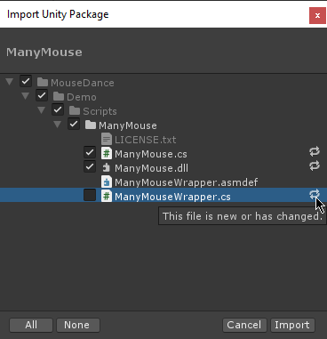

Upgrading and Best Practices Guide
When upgrading your copy of MouseDance to a newer version, always make a backup first. You may want to import the newer version into an empty project first and check what has changed.
Unity's package importing works on file GUIDs instead of the file's path. That means even if you move a file to a new folder, the GUID stays the same, and if you import a newer version of that file (from a package), Unity will overwrite it even though it's not in its original location anymore.
The package import process also doesn't have any diff checking functionality. When it detects a change, it's either you allow that file to be overwritten or not with a checkbox.
Until the UPM format becomes the de-facto standard for Asset Store packages, this is what the importing experience is like.

Don't modify MouseDance source code itself, make extensions
The mentioned limitations with Unity mean it's best that you do not directly edit the source code of MouseDance.
Instead, have your own code merely register callbacks to the MouseDance API and/or write a subclass of a MouseDance class that is meant to be subclassed. Keep that code in files that are your own, outside of the MouseDance folder. All sample code in the Code Usage section work this way.
This ensures that when MouseDance files need to be overwritten by a version update, there wouldn't be any edits made by you that will be lost.
In fact, even without Unity's limitations, this approach is still recommended, since it makes updating your copy of the MouseDance plugin be smooth and seamless.
Warning
A note to developers: If you find yourself deciding that you do need to change the source code inside MouseDance to fit your needs, please contact me first (contact details are in the asset package).
I can perhaps create a new callback or event that you can subscribe to, a new virtual method that you can override, expose more properties, or whatever works best for you.
Use Prefab Variants
When it comes to prefabs, it's better to treat the prefabs that come with MouseDance in a read-only manner. If you want to customize them, either make a new prefab from scratch, duplicate the existing prefab, or better yet, make a Prefab Variant.
With Prefab Variants, you can take advantage of the existing prefab structure, but at the same time have your edits be separate from the MouseDance plugin.
This again ensures that when MouseDance prefabs need to be overwritten by a version update, there wouldn't be any edits made by you that will be lost. See Creating a Hit Circle Prefab Variant for an example.
Make copies of ScriptableObjects
The same workflow doesn't work for ScriptableObjects because they don't have any built-in equivalent to the Prefab Variant functionality.
So if you want to make an edit to any of these ScriptableObject files, it is best to make a copy, and do the edits on your copies instead.
MouseDance uses five types of ScriptableObjects, all used by HitObjectManager:
- Hit Object Set - holds all the Hit Object prefabs
- Hit Effects Set - holds all the hit/miss visual effects prefabs
- Sound Effect Set - holds all the AudioClips of hit/miss sound effects
- Hit Object Colours - colours that instantiated Hit Object prefabs will be in
- Hit Object Settings - miscellaneous tweaks to instantiated prefabs